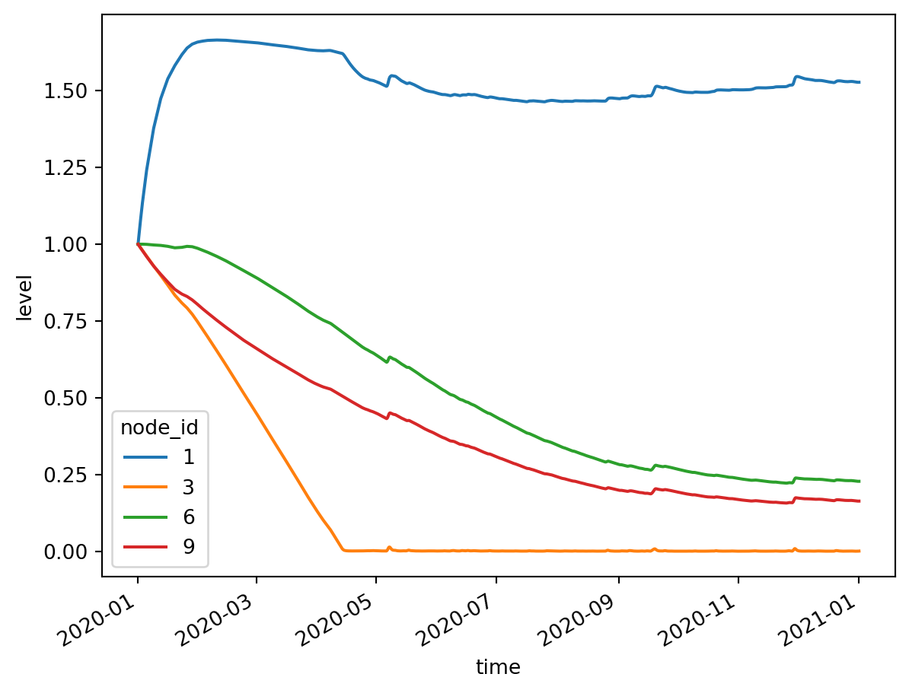
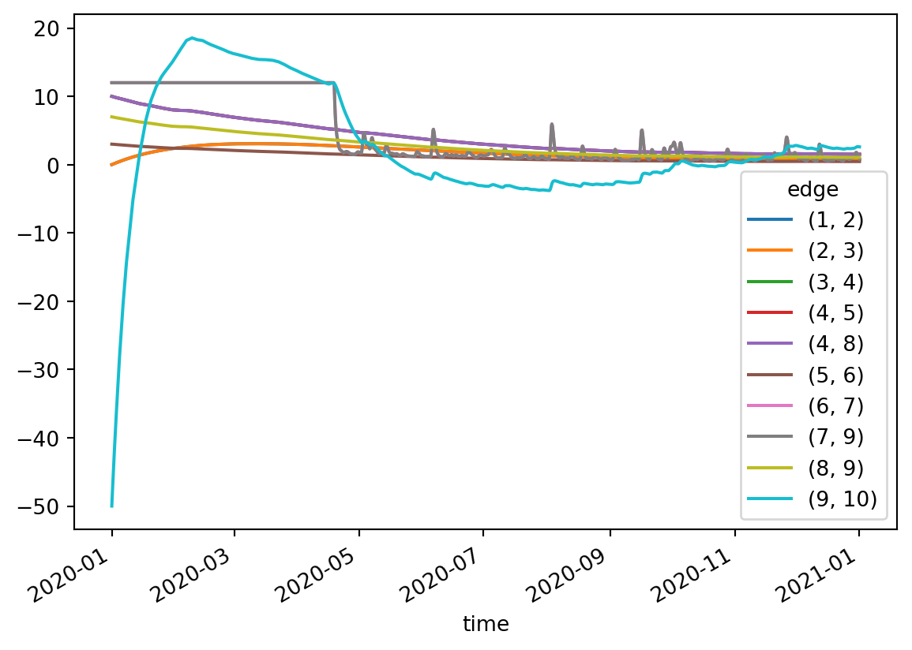

import geopandas as gpd
import numpy as np
import pandas as pd
import tempfile
from pathlib import Path
import ribasimExamples
1 Basic model with static forcing
Set up the nodes:
xy = np.array(
[
(0.0, 0.0), # 1: Basin,
(1.0, 0.0), # 2: LinearLevelConnection
(2.0, 0.0), # 3: Basin
(3.0, 0.0), # 4: TabulatedRatingCurve
(3.0, 1.0), # 5: FractionalFlow
(3.0, 2.0), # 6: Basin
(4.0, 1.0), # 7: Pump
(4.0, 0.0), # 8: FractionalFlow
(5.0, 0.0), # 9: Basin
(6.0, 0.0), # 10: LevelControl
]
)
node_xy = gpd.points_from_xy(x=xy[:, 0], y=xy[:, 1])
node_type = [
"Basin",
"LinearLevelConnection",
"Basin",
"TabulatedRatingCurve",
"FractionalFlow",
"Basin",
"Pump",
"FractionalFlow",
"Basin",
"LevelControl",
]
# Make sure the feature id starts at 1: explicitly give an index.
node = ribasim.Node(
static=gpd.GeoDataFrame(
data={"type": node_type},
index=np.arange(len(xy)) + 1,
geometry=node_xy,
crs="EPSG:28992",
)
)Setup the edges:
from_id = np.array([1, 2, 3, 4, 4, 5, 6, 8, 7, 9], dtype=np.int64)
to_id = np.array([2, 3, 4, 5, 8, 6, 7, 9, 9, 10], dtype=np.int64)
lines = ribasim.utils.geometry_from_connectivity(node, from_id, to_id)
edge = ribasim.Edge(
static=gpd.GeoDataFrame(
data={"from_node_id": from_id, "to_node_id": to_id},
geometry=lines,
crs="EPSG:28992",
)
)Setup the basins:
profile = pd.DataFrame(
data={
"node_id": [0, 0],
"storage": [0.0, 1000.0],
"area": [0.0, 1000.0],
"level": [0.0, 1.0],
}
)
repeat = np.tile([0, 1], 4)
profile = profile.iloc[repeat]
profile["node_id"] = [1, 1, 3, 3, 6, 6, 9, 9]
# Convert steady forcing to m/s
# 2 mm/d precipitation, 1 mm/d evaporation
seconds_in_day = 24 * 3600
precipitation = 0.002 / seconds_in_day
evaporation = 0.001 / seconds_in_day
static = pd.DataFrame(
data={
"node_id": [0],
"drainage": [0.0],
"potential_evaporation": [evaporation],
"infiltration": [0.0],
"precipitation": [precipitation],
"urban_runoff": [0.0],
}
)
static = static.iloc[[0, 0, 0, 0]]
static["node_id"] = [1, 3, 6, 9]
basin = ribasim.Basin(profile=profile, static=static)Setup linear level connection:
linear_connection = ribasim.LinearLevelConnection(
static=pd.DataFrame(data={"node_id": [2], "conductance": [1.5e-4]})
)Set up a rating curve node:
# Discharge: lose 1% of storage volume per day at storage = 1000.0.
q1000 = 1000.0 * 0.01 / seconds_in_day
rating_curve = ribasim.TabulatedRatingCurve(
static=pd.DataFrame(
data={
"node_id": [4, 4],
"storage": [0.0, 1000.0],
"discharge": [0.0, q1000],
}
)
)Setup fractional flows:
fractional_flow = ribasim.FractionalFlow(
static=pd.DataFrame(
data={
"node_id": [5, 8],
"fraction": [0.3, 0.7],
}
)
)Setup level control:
level_control = ribasim.LevelControl(
static=pd.DataFrame(
data={
"node_id": [10],
"target_level": [1.5],
}
)
)Setup pump:
pump = ribasim.Pump(
static=pd.DataFrame(
data={
"node_id": [7],
"flow_rate": [0.5/3600],
}
)
)Setup a model:
model = ribasim.Model(
modelname="basic",
node=node,
edge=edge,
basin=basin,
level_control=level_control,
pump=pump,
linear_level_connection=linear_connection,
tabulated_rating_curve=rating_curve,
fractional_flow=fractional_flow,
starttime="2020-01-01 00:00:00",
endtime="2021-01-01 00:00:00",
)Write the model to a TOML and GeoPackage:
tempdir = Path(tempfile.mkdtemp(prefix = "ribasim_"))
model.write(tempdir / "basic")2 Update the basic model with transient forcing
This assumes you have already created the basic model with static forcing.
import numpy as np
import pandas as pd
import xarray as xr
import ribasimmodel = ribasim.Model.from_toml(tempdir / "basic/basic.toml")time = pd.date_range(model.starttime, model.endtime)
day_of_year = time.day_of_year.values
seconds_per_day = 24 * 60 * 60
evaporation = (
(-1.0 * np.cos(day_of_year / 365.0 * 2 * np.pi) + 1.0) * 0.0025 / seconds_per_day
)
rng = np.random.default_rng()
precipitation = (
rng.lognormal(mean=-1.0, sigma=1.7, size=time.size) * 0.001 / seconds_per_day
)We’ll use xarray to easily broadcast the values.
timeseries = (
pd.DataFrame(
data={
"node_id": 1,
"time": time,
"drainage": 0.0,
"potential_evaporation": evaporation,
"infiltration": 0.0,
"precipitation": precipitation,
"urban_runoff": 0.0,
}
)
.set_index("time")
.to_xarray()
)
basin_ids = model.basin.static["node_id"].unique()
basin_nodes = xr.DataArray(
np.ones(len(basin_ids)), coords={"node_id": basin_ids}, dims=["node_id"]
)
forcing = (timeseries * basin_nodes).to_dataframe().reset_index()state = pd.DataFrame(
data={
"node_id": basin_ids,
"storage": 1000.0,
"concentration": 0.0,
}
)model.basin.forcing = forcing
model.basin.state = statemodel.write(tempdir / "basic-transient")Now run the model with ribasim basic-transient/basic.toml. After running the model, read back the output:
df_basin = pd.read_feather(tempdir / "basic-transient/output/basin.arrow")
ds_basin = df_basin.set_index(["time", "node_id"]).to_xarray()
ds_basin["level"].plot(hue="node_id")
df_flow = pd.read_feather(tempdir / "basic-transient/output/flow.arrow")
df_flow["edge"] = list(zip(df_flow.from_node_id, df_flow.to_node_id))
df_flow["flow_m3d"] = df_flow.flow * 86400
df_flow.pivot_table(index='time',columns='edge',values='flow_m3d').plot()<Axes: xlabel='time'>